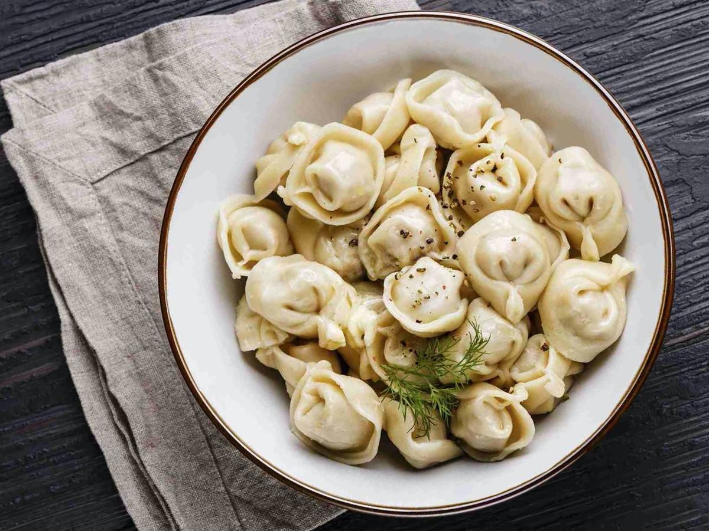

Судя по рейтингам, Трамп точно проиграет выборы президента США. Но вы же помните 2016 год?
До президентских выборов в США осталась всего неделя,
и на первый взгляд, у Дональда Трампа дела идут неважно.
Демократ Джо Байден лидирует во всех национальных
рейтингах, вырываясь вперед на 10 или даже больше очков.
Если бы президент в Штатах избирался простым большинством
голосов, вероятность победы Трампа была бы довольно
незначительной. Но благодаря особенностям американской
избирательной системы и сочетанию нескольких благоприятных
факторов Трамп все еще имеет шансы переизбраться на второй срок.
Трамп все еще имеет шансы переизбраться на второй срок
На фото: г-н Трамп озадачен
Скептики могут вспомнить: разве не те же самые рейтинги
и эксперты предсказывали убедительную победу Хиллари
Клинтон за неделю до выборов в 2016 году? Справедливое
замечание, но сейчас не 2016-й. Тогда Дональд Трамп
находился в совсем других условиях: темная лошадка,
победы которой ни на республиканских праймериз, ни
тем более на выборах не ожидал никто — возможно, даже
он сам. Тем не менее его штабу удалось тогда мобилизовать
прежде пассивные группы электората — прежде всего, белых
американцев без университетского образования, живущих в
центральных штатах вдали от крупных городов двух океанских
побережий.
Как приготовить вкуснейший грушевый пирог с козьим сыром. Праздничный рецепт от «Медузы» (в честь их шестилетия)
Казалось бы, причем здесь «Медуза»? Я просто там копирую статьи.
1 Что это за пирог?
Как говорит Джейми Оливер, часто лучшие рецепты, вроде тарта-татен, — это чьи-то кулинарные провалы. Этот пирог — не исключение, мы его придумали для утилизации совершенно поплывшего перезревшего сыра и не очень вкусных груш. Сначала мы хотели приготовить коблер с персиками — десерт из южных штатов США, в котором персики буквально плавают в масляном фритюре с кучей сахара. Коблер вышел не очень, и мы подумали — а не искупать ли вместо этого груши в хересе с сахаром; а еще груши отлично сочетаются с сыром. Получилось гораздо вкуснее, чем мы ожидали! Теперь мы готовим этот пирог всегда, когда видим в продаже непастеризованный козий сыр, теряющий свою форму.
2 Самое главное: песочная основа!
Для начала нужно приготовить песочную основу, которая — это принцип всех тартов и кишей — печется отдельно. Кажется, что это очень сложное дело для начинающих кондитеров, но поверьте — если вы испечете ее один раз, то потом сможете приготовить домашнюю выпечку по миллиону рецептов. Эта основа дает бесконечное множество вариантов: тарты соленые и тарталетки с клубникой, киши и любые другие открытые пироги. Если вы не знакомы с этим тестом, лучше сделать его заранее и испечь основу накануне. Она вполне переживет ночь в холодильнике — надо только завернуть ее в пленку.
3 Как готовить основу для пирога?
Лучше и проще всего делать тесто в комбайне. Если нет комбайна, муку и масло можно порубить холодным ножом, перетирая руками в крошку, но не давая маслу расплавиться от тепла ваших рук. По поводу жировой основы ведутся ожесточенные споры. Французы, разумеется, используют только сливочное масло, многие английские и русские рецепты — жир, великая Джулия Чайлд советует добавлять к маслу маргарин. Кстати, наши хозяйки еще меняют часть воды на водку, чтобы придать тесту большей песочности.
Главный принцип этого теста — жир и жидкость должны быть холодными, и его не нужно месить. Совсем. Его нужно только довести до состояния однородности для раскатки. Мы используем масло и немного маргарина. Маргарин придает тесту воздушность и шикарную рассыпчатость. Ведь главная задача основы — выступить в качестве посуды для жидкой начинки, но быть такой рассыпчатой, чтобы пирог можно было есть без ножа, пользуясь только вилкой.
Главный принцип этого теста — жир и жидкость должны быть холодными, и его не нужно месить. Совсем. Его нужно только довести до состояния однородности для раскатки. Мы используем масло и немного маргарина. Маргарин придает тесту воздушность и шикарную рассыпчатость. Ведь главная задача основы — выступить в качестве посуды для жидкой начинки, но быть такой рассыпчатой, чтобы пирог можно было есть без ножа, пользуясь только вилкой.
Ингредиенты (для формы диаметром 27 сантиметров)
- 220 граммов муки
- 100 граммов масла + 60 граммов маргарина или жира
- холодная вода (около 5–6 столовых ложек, можно заменить одну ложку холодной водкой)
- щепотка соли, щепотка сахара
4 Дальше все очевидно, я устала копировать
Смешать, размешать, уложить и в духовку. Приятного аппетита!
Топ-4 пельменных Москвы
Лепим и Варим
Одновременно демократичные и авангардные пельменные предлагают своим гостям как традиционные рецепты (например, свинина с говядиной), так и нечто особенное — пельмени с начинкой из камчатского краба.
Вареничная № 1
Классическая пельменная с роскошным выбором любимых блюд — тут тебе и уральские пельмени, и их сибирская вариация. Если вы не знали, в чем же отличие, самое время сходить и обнаружить. Порции большие, любителям сладкого предлагают вареники.
Пельмени
За неброским названием кроется отличная, как говорится, старорежимная пельменная. Примечательно и ее расположение — на самой короткой улице Москвы с говорящим именем Ленивка, и выбор блюд. Помимо классических пельменей, тут предлагают якутские с олениной, царские с рыбой или азиатские с бараниной.
СибирьСибирь
Это заведение язык не повернется назвать пельменной — это полноценный ресторан с эклектичным, но изысканным интерьером. В меню классика — сибирские пельмени, но сразу с 4 видами мяса, а также нечто из разряда «фудпорн» — телятина с папоротником, пелядь в шампанском или осетрина, разумеется, в икорном соусе.